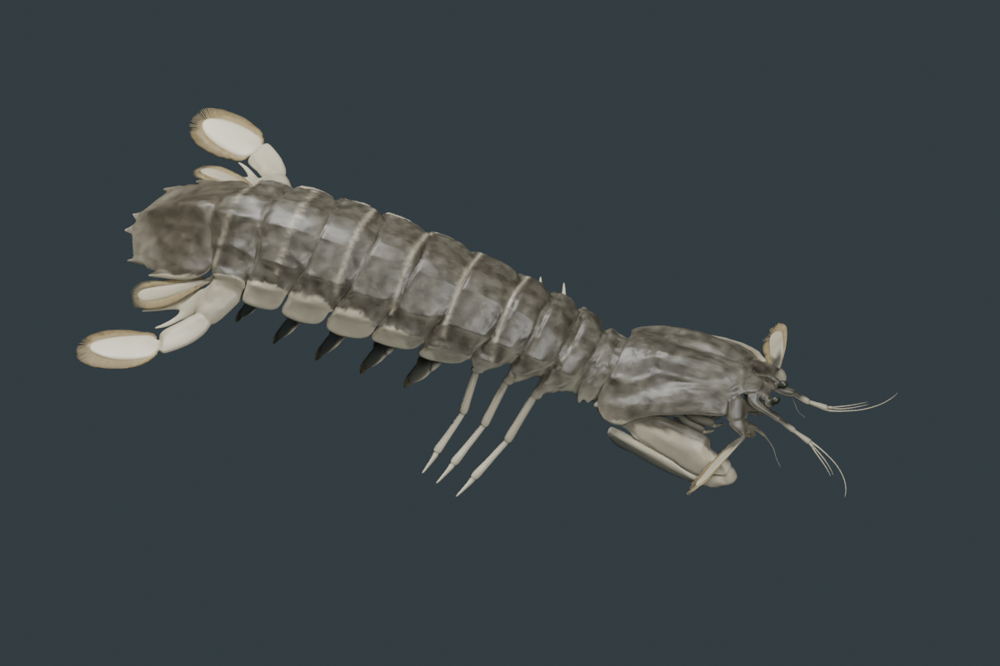
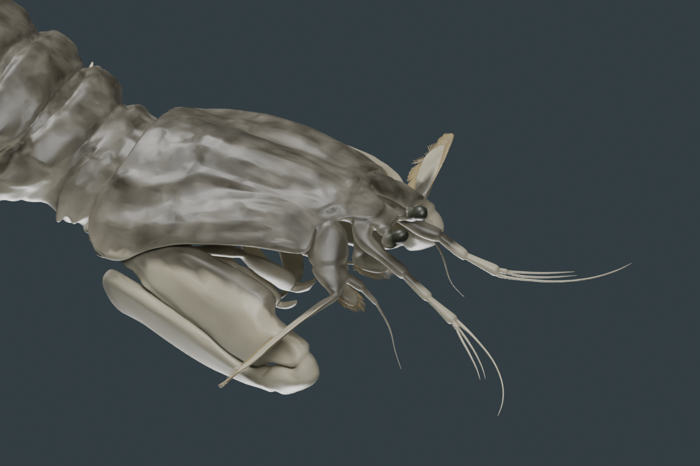
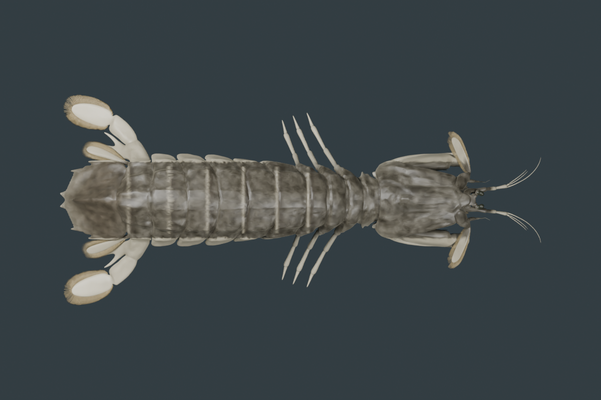
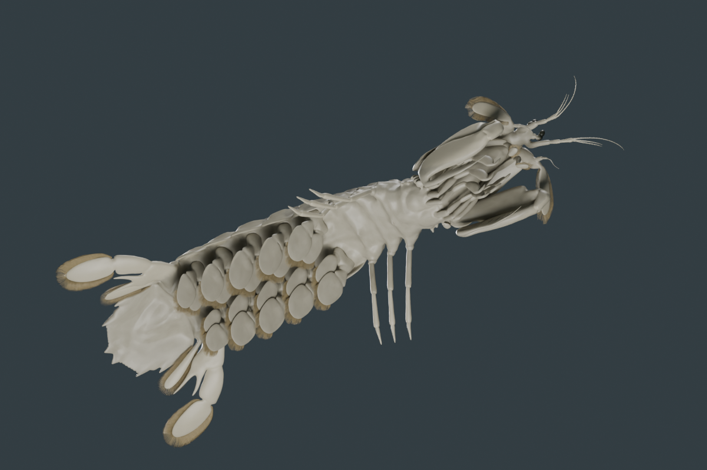

← PhenoVoxel ArchiveTwo source specimens, with their evidence kept visible.
v0.7.7 · November 2026. Exterior models can now be examined in the archive viewer alongside the existing sensory and deposited DNA studies.
These are source-derived reconstructions. A useful visual model is not a validated measurement of an animal's anatomy, colour, gait, internal physiology or subjective vision.
Atlantic mantis shrimp · Squilla empusa
Open the coloured specimen →
The supplied DigitalLife Model 105 archive contained geometry but no material file or colour images. This release adds authored grey-brown shell pigment, darker segment bands, pale appendages, eyecup colour and a nonmetallic shell finish. Four source parts, including mouthparts and bristles, remain. Surface simplification reduces the interactive mesh to 244,676 triangles. No display base is present.
The shell palette is guided by Sean Callahan's UMCES photograph. Individual markings, transparency and lighting differ; this is not measured reflectance or the source individual's recovered texture. The existing sensory study retains its species-specific evidence, including the reported visual pigment class near 517 nm.

Rendered exported GLB in Blender studio lighting.
Existing source anatomy; authored colour. No added human-like pupils.
Dorsal pigment and source segment geometry.
Ventral geometry retained; source-derived exterior, not an internal anatomy simulation.Movement remains pending. The supplied body is a connected static mesh. A biologically reviewed rig and species-specific kinematics are needed before locomotion, feeding or eye tracking can be offered.
Source: Johnson Martin, Josh Medina, Kate Feller and DigitalLife3D; adult female reconstruction. CC BY-NC 4.0 applies to the derivative.
Japanese pit viper · Gloydius blomhoffii
Open the textured specimen →
The unchanged creator GLB retains its 2048-pixel photograph texture, 40,506 render vertices, skeleton and 4.958-second animation. The archive adds finite playback, pause, five selectable poses and a start/reset stage. A middle-body-following view keeps the animal visible. Texture coordinates and relative source articulation are retained; no ground mesh is added.
This is explicitly a creator movement clip. Timing, ground contacts, velocity and species-specific gait have not been validated against a measured animal. It does not model infrared sensing, muscle forces or internal physiology.
Source: ffish.asia / floraZia.com, CC0.
Download the editable coloured Blender specimen (10.5 MB) · CC BY-NC 4.0. Blender material nodes include authoring detail beyond the portable web finish.
Review and remaining work
Automated checks cover source hashes, nonuniform shrimp pigment, geometry budgets, retained viper UVs, finite endpoint handling, out-of-order pose selection and exact reset. Visual review includes whole, head, top and underside views; phone and tablet layouts are checked separately. A real iPhone/iPad camera check remains user-assisted.
The separate Oratosquilla oratoria download awaits its own model, DNA and sensory-evidence integration. Reindeer remains under maintenance for 3D. Species without sufficient sensory evidence retain their maintenance state.
Full source attribution and licenses · Verification record · Phone camera checklist